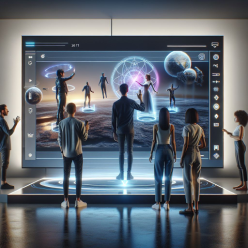

The Book, "The Unleashed Television" by Laurent Broomhead and Pierre Kohler
Dive into the fascinating world of tomorrow's television with "The Unleashed Television," a visionary work written by Laurent Broomhead and Pierre Kohler in 1980. This captivating book takes you on a journey through the technological innovations that would revolutionize our television experience. Though written over 40 years ago, this book surprisingly resonates with our concept of immersive television based on augmented reality.
Remarkable Predictions by the Authors
- Miniature Screens: The book speaks of phone screens (doing the same things as televisions), which did not exist at the time. This prediction was accurate given the quality of smartphones we have today, both visually and technologically.
- The Screens of the Future: The book mentions the arrival of revolutionary screens, including flat, giant, and even miniature models. This prediction has largely come true with our ultra-thin LED televisions.
Example of a future screen
- 3D Television: The authors anticipated a three-dimensional television experience, foreseeing attempts at 3D TVs and, in a way, today's virtual reality.
- New Storage Media: The book mentions the "battle" over video cassettes and video discs, foreshadowing the digital and streaming era. Making videos smaller in size and discs larger in storage is an important aspect of technology today.
These ideas, which seemed futuristic at the time, some have become reality and others foreshadow our immersive television.

Excerpt from the book showing that the authors were ahead of their time
A Bridge Between Past and Future

Our concept of television transforming the physical environment through augmented reality fits with the predictions of Broomhead and Kohler. Where they imagined 3D television, we offer a fully immersive experience, blurring the boundaries between the virtual and real.
The Evolution of "Live" Broadcasting
The book also discussed advances in live broadcasting. Our television of the future takes this concept further, allowing not only viewing but also physical interaction with the broadcasted environment.

These people interact with the live game broadcast without any device, just the television.
If this article has interested you and you wish to read more: click here
If you want to know more about Laurent Broomhead's works, click here
If you want to know more about Pierre Kohler's works: click here
If you'd like to discover more about the movie related to the future television, click here
If you'd like to access the article regarding the object of the future that the website is focused on, click here